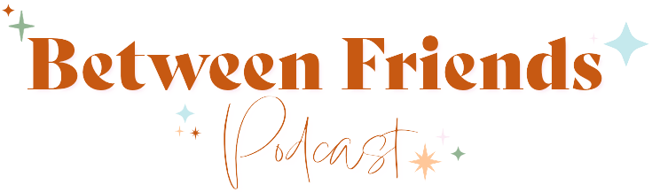

Apple Podcasts
Follow along on Apple Podcasts.
Listen in the Apple Podcasts app and stay current as new episodes drop.
The Between Friends Podcast
Join Chloe, Kennedy, Madison, and Sydney for stories, reflections, and the kind of catch-up that turns everyday life into something worth replaying.

Why listeners stay
Between Friends blends heart, humor, and personality. It is casual enough to feel welcoming and thoughtful enough to keep people listening once they press play.
Start listening
Apple Podcasts
Listen in the Apple Podcasts app and stay current as new episodes drop.
Spotify
Perfect for a quick sample, a long drive, or adding a new show to your rotation.